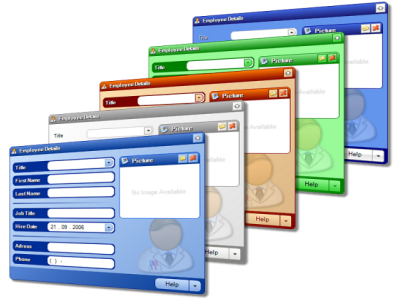

Explorando librerías, estándares CSS y diseño web responsivo.
El desarrollo web en el lado del cliente ha experimentado una transformación radical en la última década. Lo que comenzó como maquetaciones estáticas creadas exclusivamente con código HTML estructurado y estilos CSS rudimentarios, ha evolucionado hacia arquitecturas complejas impulsadas por frameworks reactivos y sistemas de diseño adaptativos.
La adopción de herramientas como Bootstrap simplifica sustancialmente la creación de interfaces responsivas gracias a su sistema de cuadrícula flexible (Grid System). Esto asegura que cualquier aplicación web se visualice de forma óptima tanto en dispositivos móviles compactos como en monitores de alta resolución sin necesidad de reescribir consultas de medios avanzadas.
Además, el control de versiones mediante herramientas como Git y plataformas colaborativas como GitHub resultan fundamentales para mantener un historial organizado de las iteraciones del código. Esto permite integrar componentes modulares de manera rápida y segura en entornos de trabajo distribuidos.

Prototipado e interfaces de usuario web.
Entornos de desarrollo e inspección de código.
Pruebas de diseño en dispositivos móviles.